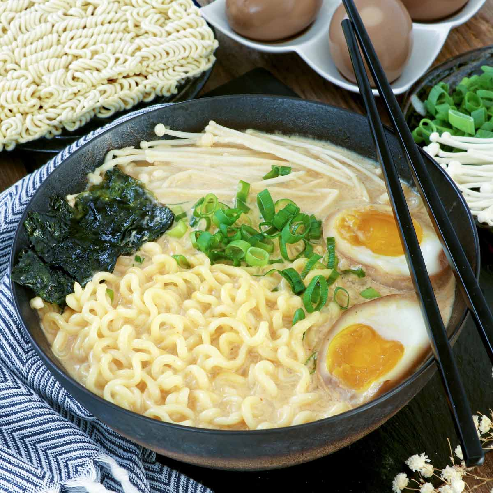

Ballin' On A Budget...
...Instant Ramen + Poached Egg

I'm here to tell you that instant ramen doesn't have to be just a means to an end when your wallet is feeling a bit light. There's a couple ways of really spicing up your bowl of noodles without breaking the bank!
Let's get into it:
- Boil up 2 cups of water in a small saucepan.
- Then, drop your noodles in for about 2-3 minutes, until they become soft and.. noodle..-like? Then add your spice packet (my go-to is "Creamy Chicken").
- With the water still boiling, slowly crack an egg and drop the egg into the boiling water (you're going to cook this for about 2-3 additional minutes).
- Immediately cover the saucepan with a lid.
- Meanwhile, in your eating bowl prepare by adding a sprinkle of sesame seeds and a splash of teriyaki sauce.
- After your egg is done poaching, remove the saucepan from the heat.
- Carefully pour your ramen noodles and broth into your eating bowl, add a small amount of butter and half a slice of american cheese ontop of the noodles to melt.
- BAM, you've got yourself a DELICIOUS bowl of instant ramen noodles.
Back To The Recipes!